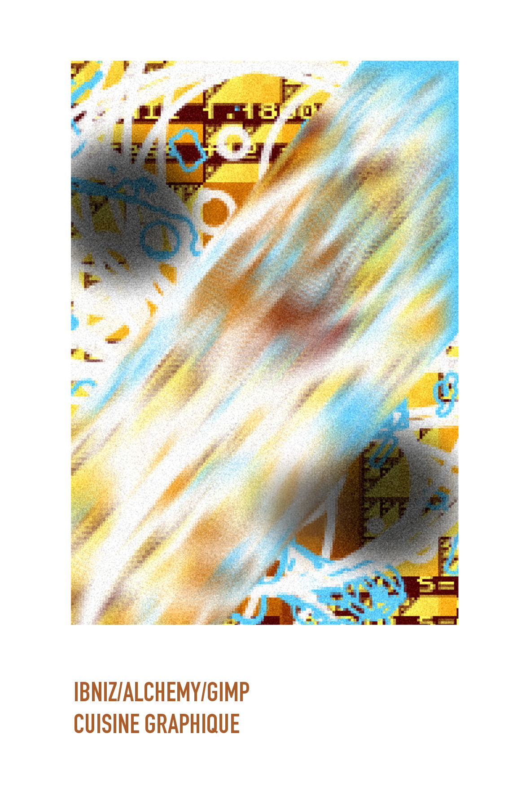

Pour commencer cette recette, ouvrez Ibniz et lancer le programme à l'aide de la touche F1 de votre clavier. Un bruit aigu retentit alors en continu; vous êtes prêt à coder. Chaque code et/ou caractère impacte le visuel et le son à l'écran. Par exemple, ici, le code est le suivant : &-^. Une fois que le visuel vous satisfait, exportez le en .png ou au format de votre choix et passez au logiciel suivant.
Poursuivez en ouvrant Alchemy. Laissez libre recourt à votre imagination et aux possibilités qu'offre ce logiciel.En effet, il est possible de générer des formes préenregistrées, et de les diposer à la chaîne sur votre composition tel un aérosol. Ajoutez une pincée de formes aléatoires et faites les se juxtaposer dans la page. Variez les formes, remuez, et ajoutez-y de la couleur. Exportez et laissez reposer quelques minutes.
Cette troisième et dernière étape sera celle de la mise en forme de vos associations précédentes. Ouvrez Gimp et importez-y la composition préalablement enregistrée dans Alchemy. Une fois votre plan de travail nettoyé, étalez votre image et à l'aide d'un emporte-pièce, rognez votre composition à votre convenance. Il est maintenant temps d'ajouter quelques artifices à votre réalisation. Aidez-vous de l'outil doigt pour balayer une partie de l'image, puis passez à l'assaisonnement. Dans la palette des effets, ou filtres, pixelisez légèrement votre image afin de la décomposer selon une fine grille de petits carrés. Ajoutez à cela un soupçon de bruit RVB. Passez maintenant à la touche finale qui n'est autre que celle du nom que vous donnerez à votre production. Choisissez parmi les polices disponibles et agancez votre texte avec votre image. Laissez mijoter, c'est prêt !
